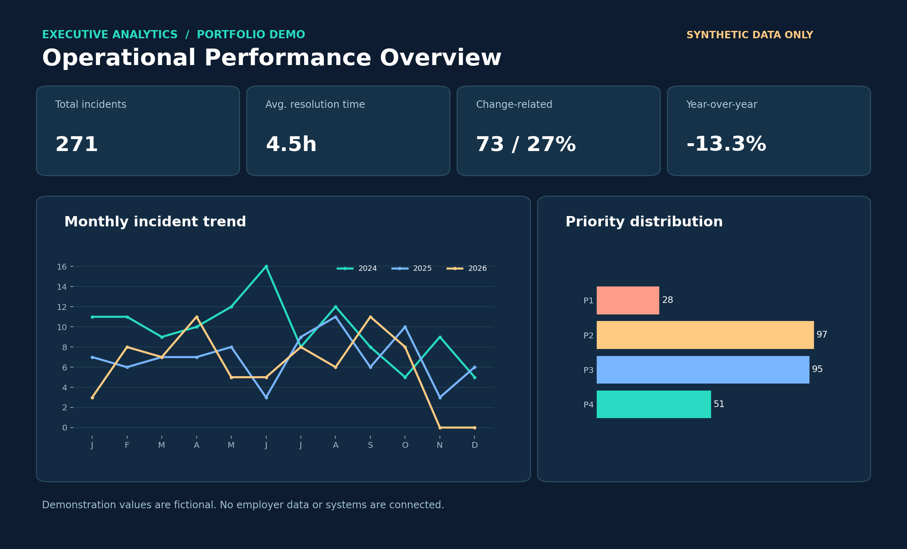

Power BI & DAX
Dynamic KPI measures, year-over-year comparison, slicer-sensitive calculations, incident trend reporting and data storytelling.
Hands-on experience spanning SQL, Azure Databricks, Power BI, DAX, executive KPIs and data quality. Explore an interactive dashboard built with entirely synthetic incident data.
Filter by year, priority, site and reassignment. All charts and KPI cards respond to your selections.
2024–2026 · click a year in the filter to isolate it
Share of selected incident records
Incident appearances by site
Totals update with priority, site and reassignment filters
A static snapshot complements the live demonstration. Both use the same fictional dataset, suitable for public portfolio display.
Open full-resolution screenshot ↗
A conceptual architecture inspired by enterprise analytics experience. No internal systems or data are connected.
Incident and change management data, with controlled access
Clean, validate, transform and model records
Measures, time intelligence, slicers and reporting
Executive KPIs, operational trends and action planning
Dynamic KPI measures, year-over-year comparison, slicer-sensitive calculations, incident trend reporting and data storytelling.
Multi-table integration, data enrichment, transformations, validation, and preparing reliable datasets for downstream analytics.
Null and duplicate checks, date normalization, site-code consistency, classification logic, and metric reconciliation.
Executive-friendly layouts, interpretable comparisons, interactive filtering and clear documentation of metric definitions.
The portfolio demo is written in vanilla HTML, CSS and JavaScript. Its records are generated synthetically and stored in a local JSON file. All filtering and calculations happen in your browser. The trend, priority, site and year charts are custom SVG/HTML visualizations. The CSV export contains only the filtered fictional records. No external analytics service, credentials or employer systems are used.
← Back to selected work